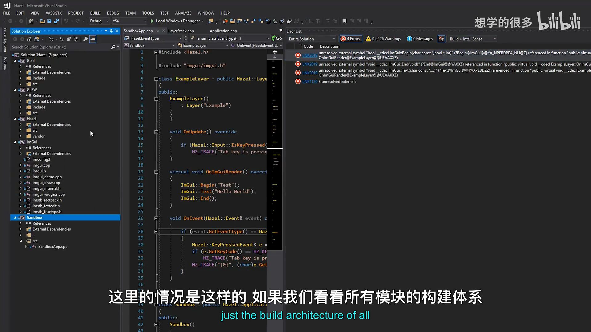
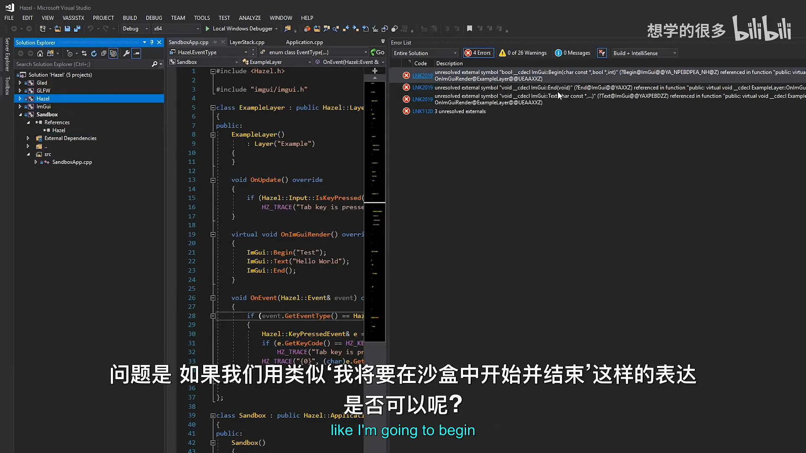
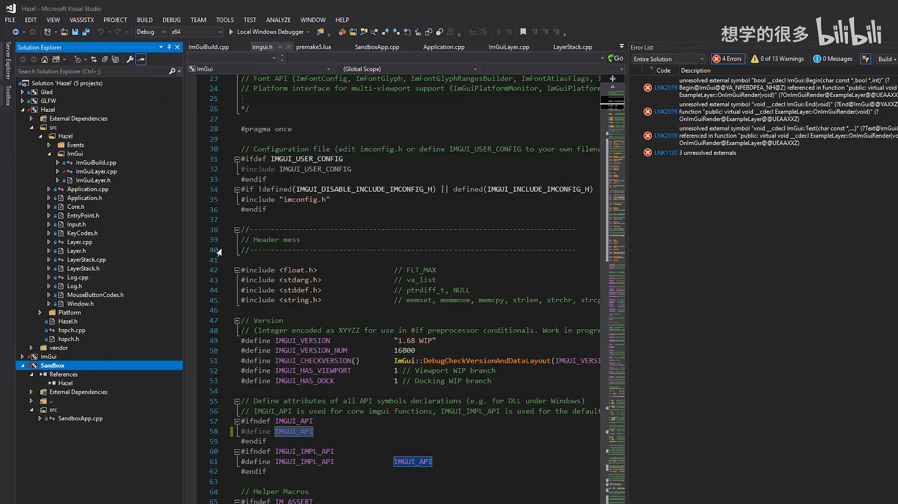
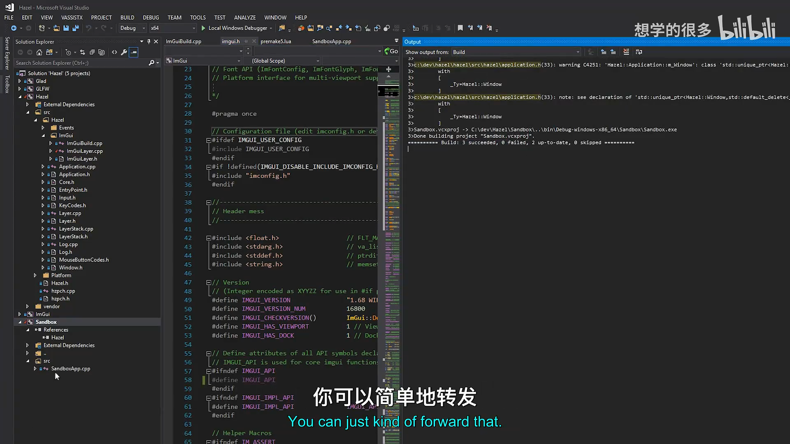
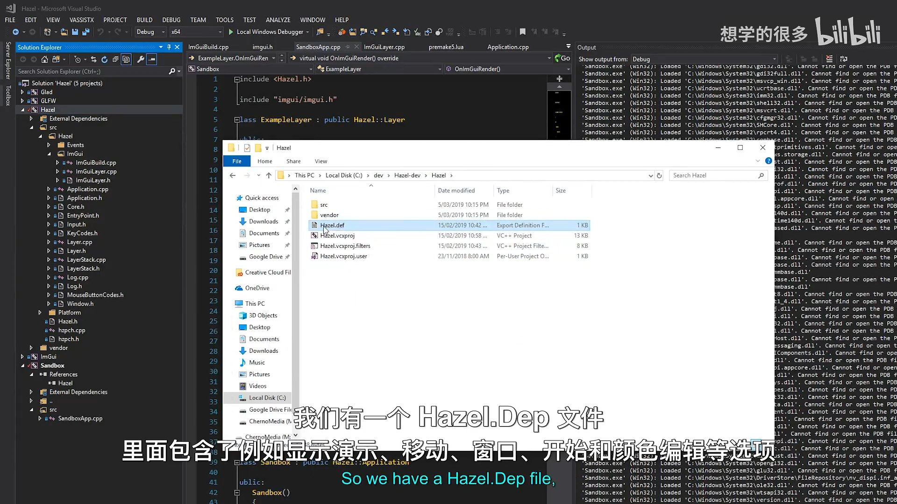
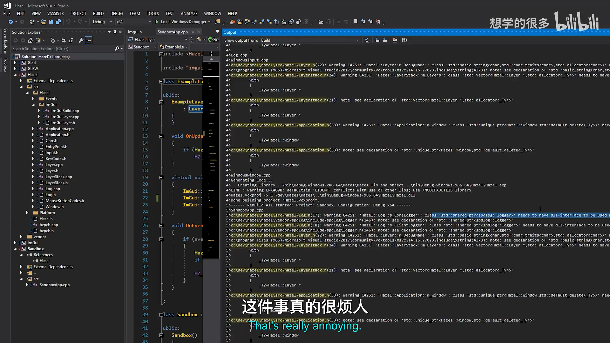
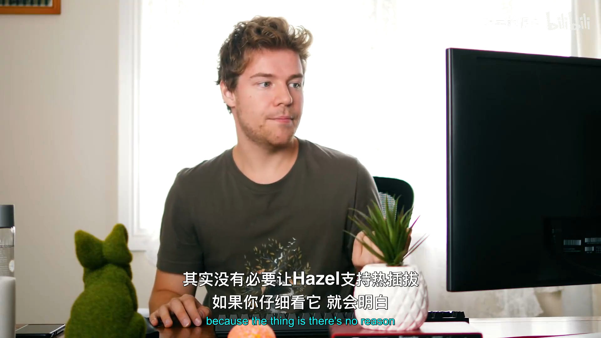

Hazel 游戏引擎笔记 025：渲染前维护与静态库决策
本节来源：The Cherno 游戏引擎系列第 25 讲“渲染与维护”，时长约 24 分 59 秒。
原课程与 Hazel 代码作者：The Cherno。
本文由视频字幕重构、翻译并整理，不是官方教材。
编者说明：本讲没有直接对应的代码提交。后续 Hazel 提交440d937a实现了“改为静态库并修复警告”，可视为本讲讨论的落地结果。
本节目标
本讲原计划开始渲染器，但清理代码时发现 Hazel 仍存在 ImGui DLL 符号导出问题。因此视频临时转向维护工作，讨论：
- ImGui 静态库链接进 Hazel DLL 后为什么丢失符号；
- 如何用导出宏临时解决；
- 如何用
.def模块定义文件长期解决； - 为什么最终更倾向于把 Hazel 改成静态库；
- 下一阶段渲染器的实现顺序。
graph TD
A[发现 ImGui 链接错误] --> B[分析静态库与 DLL 边界]
B --> C[临时导出宏方案]
B --> D[.def 导出方案]
C --> E[能构建，但依赖人为维护]
D --> F[更完整，但签名维护困难]
E --> G[转向静态库讨论]
F --> G
📷 本讲从渲染计划转向 Hazel 的维护与库类型讨论
回到原视频 (00:01:37)
1. 当前构建结构
(参考时间: 00:02:04)
ImGui 被编译为静态库：
ImGui.lib
它与 Hazel 链接：
ImGui.lib -> Hazel.dll
Sandbox 又链接 Hazel：
Hazel.dll -> Sandbox.exe
完整结构：
graph LR
A[ImGui static library] --> B[Hazel DLL]
B --> C[Sandbox EXE]
Sandbox 如果直接调用：
ImGui::Begin("Test");
ImGui::End();
链接器会尝试从 Hazel DLL 导入 ImGui::Begin、ImGui::End 等符号。

📷 ImGui 静态库先链接到 Hazel DLL，Sandbox 再链接 Hazel
回到原视频 (00:02:52)
2. 为什么会丢失 ImGui 符号
(参考时间: 00:04:33)
DLL 的链接器会丢弃未被 Hazel 内部使用的符号。
如果 Hazel DLL 自己没有调用：
ImGui::Begin
ImGui::End
ImGui::ColorEdit4
那么它们可能不会出现在最终的 Hazel.dll 导出表中。Sandbox 之后想使用这些函数，就得到：
unresolved external symbol
问题不一定是“ImGui 没编译”，而是：
- ImGui 静态库已经进入 Hazel 链接流程；
- Hazel DLL 没有使用其中某些函数；
- 链接器优化掉死代码；
- 这些符号既没有被保留，也没有被导出；
- Sandbox 最终无法导入。
flowchart TD
A[ImGui.lib 包含全部函数] --> B[链接进 Hazel.dll]
B --> C{Hazel 自己使用该函数吗?}
C -- 是 --> D[保留并可能导出]
C -- 否 --> E[链接器丢弃未使用函数]
E --> F[Sandbox 导入失败]

📷 DLL 链接器会丢弃未使用的 ImGui 符号
回到原视频 (00:04:33)
3. 临时方案一：强制使用并导出符号
(参考时间: 00:06:54)
第一种方案是：
- 在 Hazel 内部真的调用相关 ImGui 函数，防止它们被丢弃；
- 把
IMGUI_API在不同模块中定义为不同属性。
构建 ImGui 与 Hazel 时：
#define IMGUI_API __declspec(dllexport)
构建 Sandbox 时：
#define IMGUI_API __declspec(dllimport)
这样可以显式导出和导入 ImGui 符号，Sandbox 中会出现 Hello World 窗口，并且该窗口仍可拖出主应用，说明多视口功能正常。
但该方案依赖“符号刚好被使用”，对于未使用的函数仍可能失败。它适合快速验证，不是稳定长期方案。
flowchart TD
A[Sandbox 需要 ImGui::Begin] --> B{符号是否进入 Hazel.dll}
B -- 否 --> C[强制 Hazel 使用该符号]
C --> D[IMGUI_API dllexport]
D --> E[Sandbox IMGUI_API dllimport]
E --> F[链接成功]

📷 通过 IMGUI_API 导入导出属性让 Sandbox 成功链接
回到原视频 (00:07:30)

📷 链接成功后 Hello World 窗口和浮动视口都能正常显示
回到原视频 (00:07:43)
4. 长期方案二：使用 .def 模块定义文件
(参考时间: 00:09:39)
更完整的做法是为 Hazel DLL 增加 Modules Definition File：
Hazel.def
.def 文件列出希望从 DLL 导出的函数签名。
概念结构：
LIBRARY Hazel
EXPORTS
; ImGui functions required by clients
...
如果某个 ImGui 函数出现在 .def 中，链接器就必须把它保留在 Hazel DLL 并导出，即使 Hazel 自己没有调用它。
graph TD
A[ImGui.lib] --> B[Hazel.dll]
C[Hazel.def 导出列表] --> B
B --> D[Sandbox 可导入指定符号]
视频展示了一份开发分支中的实际 .def 文件，其中包括：
- ShowDemoWindow；
- Begin；
- End；
- ColorEdit4；
- 其它客户端需要的 ImGui 函数。
4.1 .def 的问题
.def 文件很有效，但维护困难：
- 必须手写函数签名；
- 不能简单依赖编译器自动生成；
- 新加客户端函数时容易忘记同步；
- 不同编译器或 ABI 下需要仔细处理名称修饰；
- 导出列表可能越来越长。
因此它是“正确问题”的“麻烦方案”，但不是最省心的长期工作流。

📷 通过 Hazel.def 手动列出需要导出的 ImGui 函数
回到原视频 (00:10:42)
5. 转向讨论：Hazel 是否应该继续使用 DLL
(参考时间: 00:11:10)
Cherno 开始重新评估 Hazel 的库类型。
最初使用 DLL 的理由：
- 方便客户端只链接 Hazel；
- 理论上支持热替换引擎代码；
- 可以减少某些客户端的链接配置。
但在实际开发中，DLL 带来了大量问题：
- 每个公共类型都需要
HAZEL_API； export / import宏遍布代码；std::shared_ptr跨 DLL 边界产生警告；- 模板跨 DLL 边界容易出问题；
- 不同模块可能链接不同版本的 C++ Runtime；
- 分发时需要携带多个 DLL；
- 链接器可能丢弃未被引擎内部使用的符号；
- Sandbox 需要强制导入大量 ImGui 符号。
graph TD
A[DLL 边界] --> B[需要 export/import 宏]
A --> C[shared_ptr/STL 跨边界警告]
A --> D[模板与 CRT 版本问题]
A --> E[符号被剥离]
A --> F[需要分发 DLL]

📷 DLL 架构带来导出宏、STL 跨边界和 CRT 版本等维护成本
回到原视频 (00:13:30)
6. 静态库的优势
(参考时间: 00:12:16)
如果 Hazel 改成静态库：
ImGui.lib + Hazel.lib -> Sandbox.exe
优点包括：
- 最终可执行文件直接包含所需代码；
- 不需要
__declspec(dllexport/dllimport)； - 不会出现 DLL 导出表缺失符号问题；
- C++ Runtime 版本更统一；
- 不需要分发一堆 DLL；
- 链接器可以在整个程序范围内做内联等优化；
- 能消除大量 DLL 边界警告；
- 客户端构建流程更一致。
graph LR
A[ImGui] --> B[Static Libraries]
C[Hazel] --> B
B --> D[Sandbox.exe]
D --> E[单文件部署]
📷 静态库把依赖链接进最终可执行文件，避免 DLL 边界问题
回到原视频 (00:17:17)
7. 那么热重载怎么办
(参考时间: 00:15:49)
热重载仍然有价值，但需要区分两部分：
7.1 游戏代码
游戏代码经常变化，适合：
- 编译为 DLL；
- 运行中替换；
- 快速迭代玩法。
7.2 引擎代码
对于使用 Hazel 制作游戏的客户端，引擎通常已经稳定：
- 不应该频繁修改引擎源码；
- 真正需要热重载的是游戏代码；
- 把 Hazel 本身做成 DLL 并不一定带来实际收益。
graph TD
A[需要热重载什么?] --> B[游戏/应用代码]
A --> C[引擎代码]
B --> D[可以单独编译为 DLL]
C --> E[通常不需要动态热替换]
E --> F[Hazel 可用静态库]
未来也可以采用类似 id Software 的方案：
- 引擎本体为静态库或可执行程序；
- 游戏模块单独做成 DLL；
- 引擎负责加载和替换游戏 DLL。

📷 热重载应优先用于游戏代码，而不是不断替换引擎本体
回到原视频 (00:15:49)
8. 支持两种构建方式是否值得
视频讨论了同时支持 DLL 和静态库的可能，但最终倾向只选择一种。
原因不是技术上做不到，而是：
- 项目主要由一个人维护；
- 多套构建路径会增加测试矩阵；
- 某些代码必须针对 DLL 边界特殊处理；
- 多余的灵活性会制造长期维护成本；
- 对 Hazel 来说，建立清晰、稳定的工作流更重要。
这与上一讲讨论 Render API 时的观点一致：通用和灵活并不自动等于更好，项目需要找到合适的边界。
9. 维护任务
(参考时间: 00:20:42)
转换静态库时会顺带处理：
- 移除不再需要的
HAZEL_API导出宏； - 清理 Premake 配置；
- 为第三方 ImGui 定义
_CRT_SECURE_NO_WARNINGS； - 处理已有 C++ 警告；
- 验证干净检出能够直接构建；
- 尝试让 Hazel 在零警告条件下构建。
第三方代码使用旧的 CRT 函数时，Hazel 不应直接修改 ImGui，而是在构建 ImGui 模块时用预处理器宏抑制相关警告。
flowchart LR
A[切换静态库] --> B[移除 export/import]
B --> C[清理 Premake]
C --> D[抑制第三方警告]
D --> E[修复自有警告]
E --> F[零警告构建]
10. 下一阶段渲染实现计划
(参考时间: 00:22:04)
维护完成后，渲染从最小闭环开始。
10.1 OpenGL Render Context
建立：
- OpenGL Context；
- Swap Chain；
- 必要的窗口与图形上下文连接。
10.2 Shader Compilation Helper
增加一个基础 Shader 编译辅助模块，方便快速创建和调试 Shader。
10.3 每集都尽量看到结果
视频明确计划避免“连续五集只写底层，最后才看到三角形”。实现策略是：
- 先写最小的 OpenGL 客户端代码；
- 立即让三角形显示在屏幕上；
- 再把代码逐步提取到类；
- 提取到 Hazel Render API；
- 最后抽象为 Renderer。
flowchart TD
A[最小 OpenGL 代码] --> B[立即显示三角形]
B --> C[提取 Context / SwapChain]
C --> D[提取 Shader / Buffers]
D --> E[完善 Render API]
E --> F[构建 Renderer]
📷 先让屏幕上出现三角形，再逐步提取 Context、SwapChain、Shader 和 Render API
回到原视频 (00:22:53)
11. 本讲结论
本讲没有完成新渲染功能，但解决了渲染长期维护的前置问题：
- 定位 ImGui 静态库链接进 Hazel DLL 后的符号剥离问题；
- 用
IMGUI_API dllexport/dllimport临时修复； - 介绍
.def模块定义文件的长期导出方案； - 认识到
.def维护成本很高； - 重新评估 Hazel 使用 DLL 的收益与成本；
- 倾向改为静态库；
- 区分引擎热重载与游戏代码热重载；
- 决定优先建立简单、稳定的构建工作流；
- 规划静态库转换、警告清理和零警告构建；
- 渲染从 OpenGL Context、Swap Chain 和 Shader Helper 开始；
- 后续每集都尽量在屏幕上展示结果。
编者说明：后续 Hazel 提交 440d937a 完成了“改为静态库并修复警告”，证明本讲讨论的方向最终进入了仓库。
下一阶段将先完成静态库转换和仓库清理，再正式实现 OpenGL 渲染上下文与第一个三角形。
附：参考
编者说明：本讲本身没有代码提交；文末参考了后续静态库转换提交，仅用于说明讨论结果。